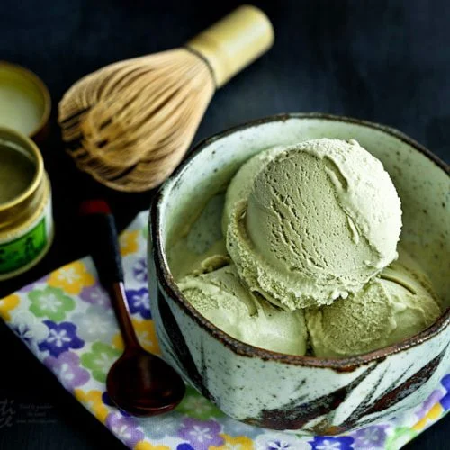

Matcha Ice Cream
Rich, creamy, and lightly earthy — homemade Matcha Ice Cream is the perfect cool treat that's
surprisingly easy to make.
Preparation:
20 minutes active prep
Chill/Freeze Time:
4-6 hours
Total:
About 5-7 hours
Ingredients:
- 1 1/2 cups (360ml) heavy cream
- 1 1/2 cups (360ml) whole milk
- 3/4 cup (150g) sugar
- 3 tablespoons matcha green tea powder (use good quality for best flavor)
- 4 large egg yolks
Instructions:
- In a medium saucepan, warm the milk, cream, and half of the sugar over medium heat until steaming
but not boiling.
- In a separate bowl, whisk the egg yolks and the remaining sugar until pale and slightly thickened.
- Slowly pour some of the hot milk mixture into the egg yolks while whisking constantly to temper
them.
- Pour the tempered yolks back into the saucepan with the rest of the milk mixture. Stir constantly
over low heat until it thickens slightly and coats the back of a spoon. Do not let it boil.
- Remove from heat. Sift the matcha powder over the custard and whisk thoroughly until completely
smooth and evenly green.
- Pour the mixture through a fine mesh strainer into a clean bowl to remove any lumps.
- Cool the mixture to room temperature, then cover and refrigerate for at least 2 hours, or until
completely chilled.
- Churn the chilled custard in an ice cream maker according to the manufacturer's instructions until
thick and creamy.
- Transfer to a container and freeze for at least 4 hours until firm enough to scoop.